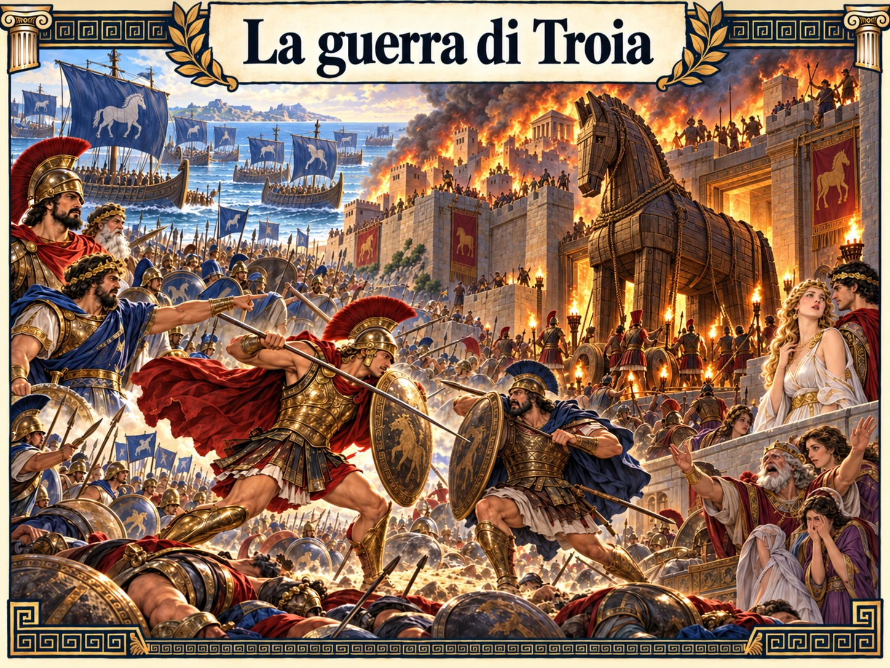
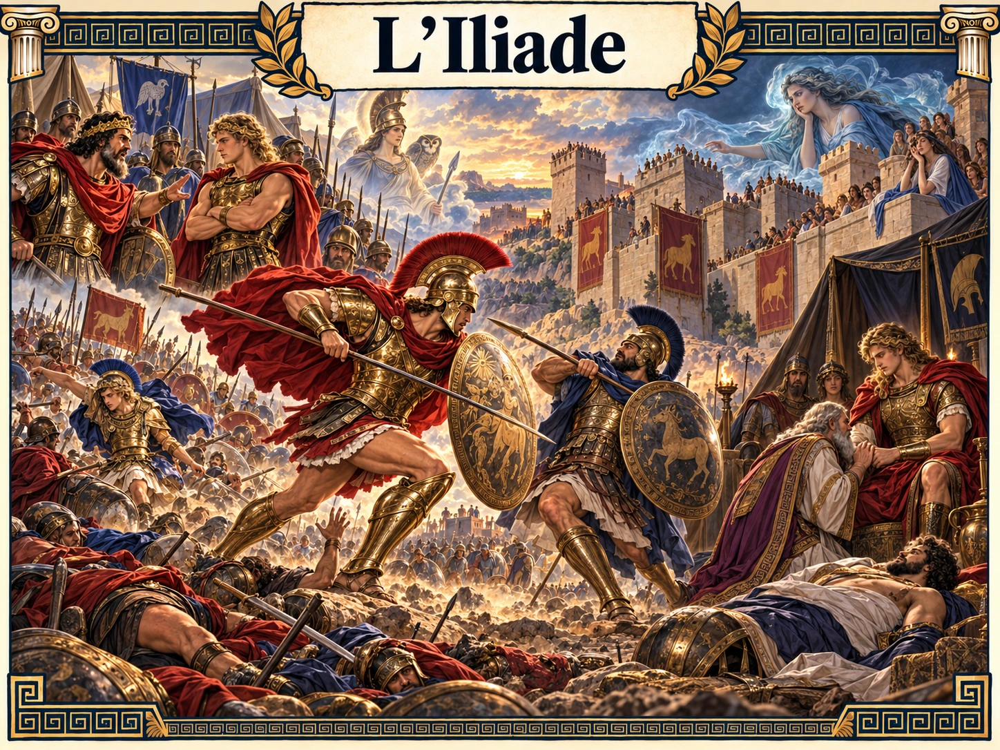

La guerra di TroiaL’intero ciclo: le cause, l’assedio e la caduta della città.Leggi e mettiti alla prova ↗
L’IliadeL’ira di Achille, il dolore e il riconoscimento dell’altro.Leggi e mettiti alla prova ↗